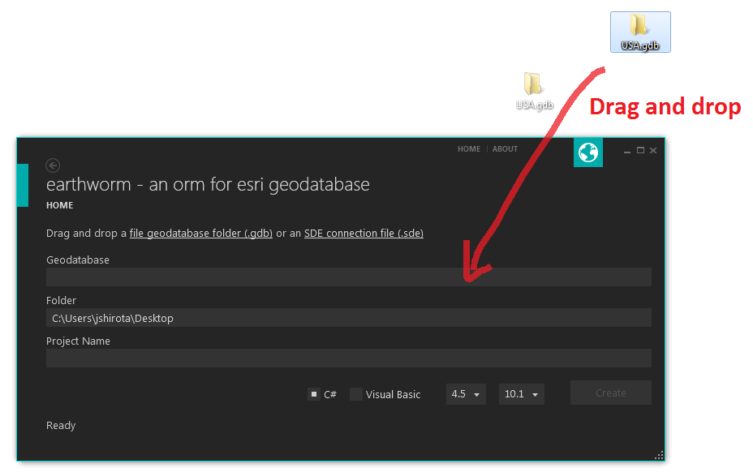
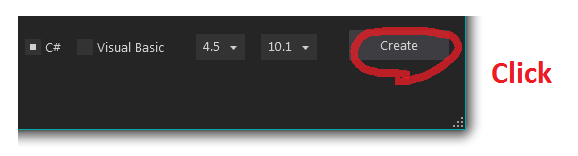
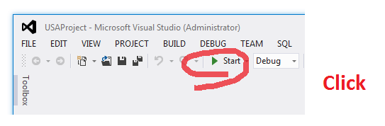

A simple .NET assembly that provides an object-relational mapping abstraction layer for geodatabase feature classes and tables. It converts features and rows into a (lazy) sequence of strongly-typed objects.
*You will need ArcGIS Desktop, Engine or Server 9.3.1, 10.0, 10.1 or 10.2.


